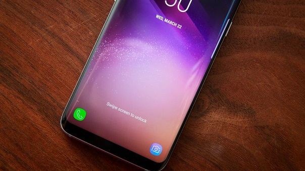

Lo bueno y lo malo del Samsung Galaxy S8

Este teléfono de Samsung, al igual que el Galaxy S8 Plus, ofrece un excelente desempeño; muy buenas cámaras; una duración de batería muy decente; es resistente al agua; tiene ranura para insertar una tarjeta microSD; el nuevo puerto USB-C; carga inalámbrica y un montón de funciones y características resultan ser muy útiles.
Sin embargo, su lector de huellas perjudica la experiencia, ya que está ubicado en un lugar poco práctico, no es muy sensible y tampoco es muy rápido. Aunque incluye la tecnología de reconocimiento facial y un escáner de iris, estas opciones no llegan actualmente a ser tan precisas y prácticas como lo que ofrecen generalmente los lectores de huellas de celulares.
Además, Bixby, la inteligencia artificial de Samsung, llega en estos celulares a medias, pues por ahora no tiene el componente más importante -- e inquietante -- del celular: su avanzado reconocimiento de voz en español, ni en inglés. Inclusive, en inglés aún sigue en versión beta y pocos usuarios pueden accederlo.
En general, el Samsung Galaxy S8 es un excelente celular que pudo ser todo un home run, pero su lector de huellas impacta de manera importante nuestra experiencia diaria y es un componente tan básico que incluso celulares que cuestan menos de US$200 logran cumplir y ofrecer una mejor experiencia de desbloqueo.
El Galaxy S8 (junto con el Galaxy S8 Plus) es el mejor celular de Samsung, al menos hasta que llegue el Galaxy Note 8. Asimismo, sigue siendo un celular más completo que celulares como el LG G6, HTC U11, Sony Xperia XZ Premium y OnePlus 5.
El paquete de funciones, características y desempeño lo convierte en el celular más completo de hoy y uno de los mejores que puedes comprar.